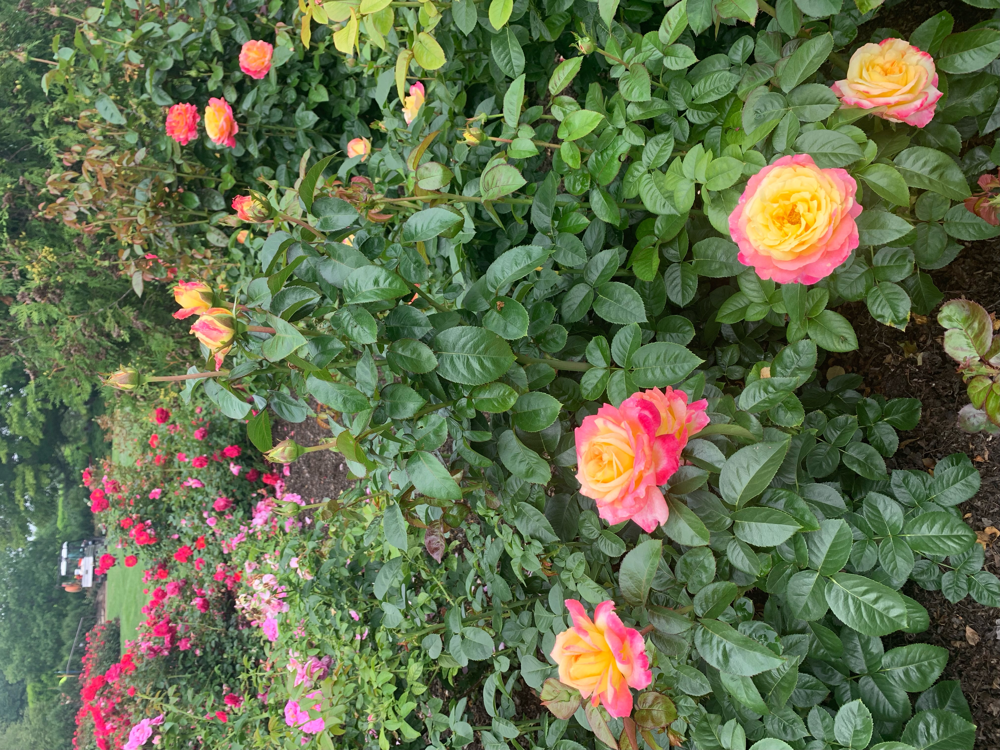
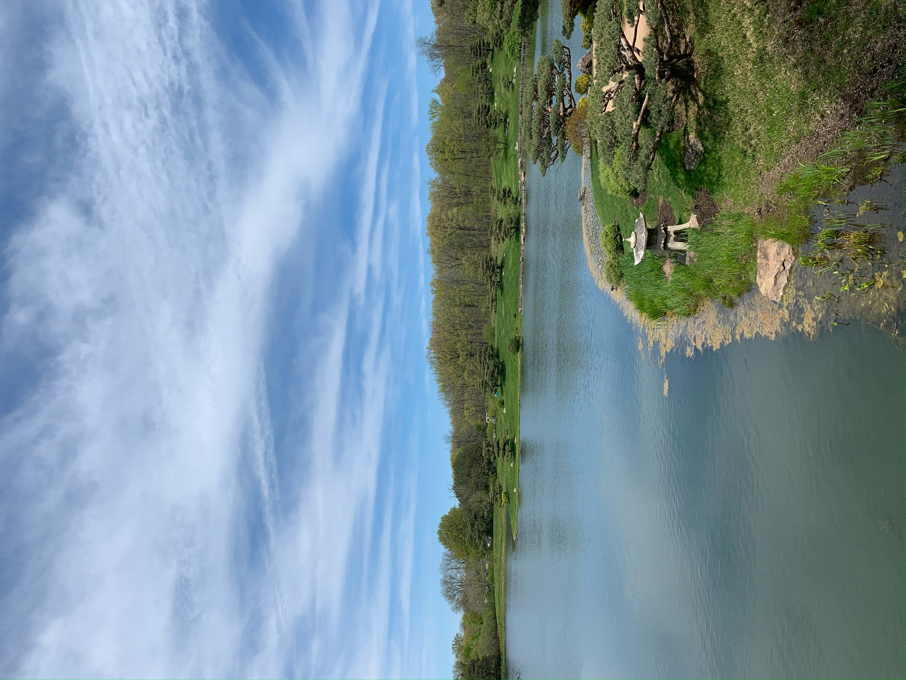
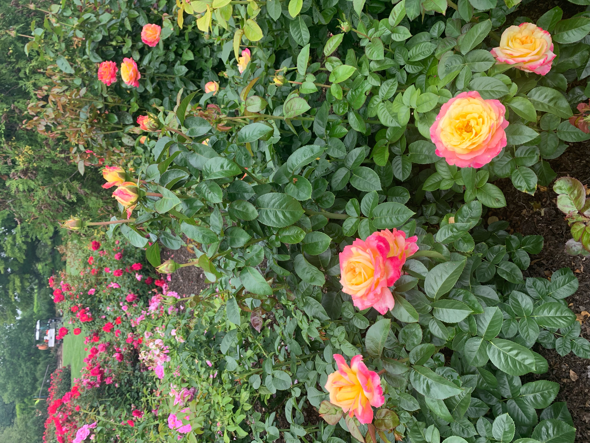
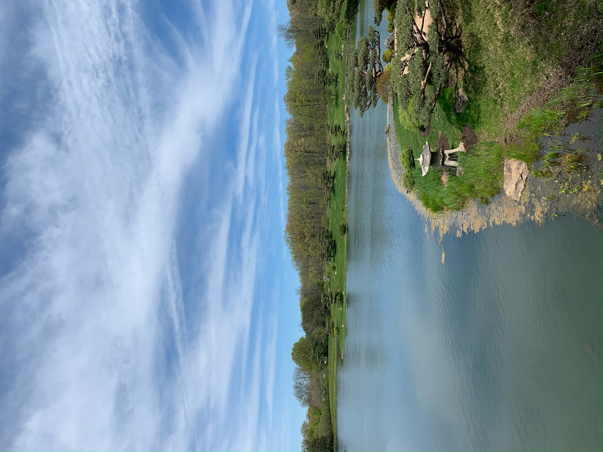
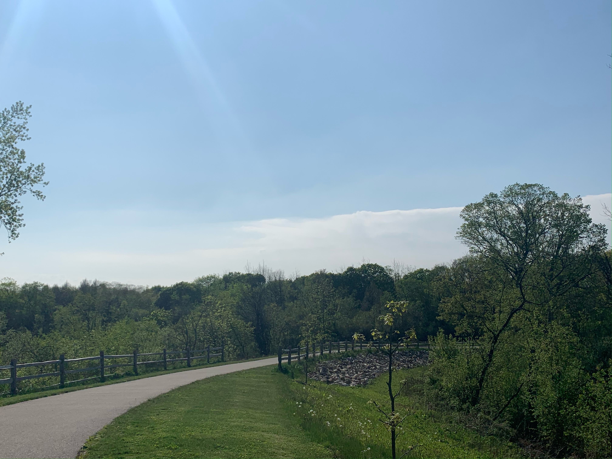
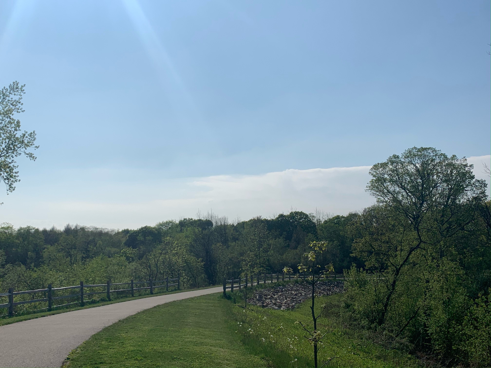

Chicago Botanic Gardens
The Chicago Botanic Gardens span 385 acres and consist of 26 different gardens available every season of the year to explore. The Gardens provide seasonal festivals, tours by rain or by foot, art exhibitions,and more. Explore the Japanese Garden, English Walled Garden, climb a waterfall garden, cross bridges over lakes. Located at: 1000 Lake Cook Road Glencoe, IL 60022.


 



Elawa Farms
The Elawa Farms Foundation was originally developed for the A. Watson Armour family in 1917. The Elawa Farms allow visiotrs to hike tails in the Middlefork Savannah. Its 100 acres feature oak savanna and woodlands, praries, sedge meadows, and marshes. Located at: 1401 Middlefork Dr, Lake Forest, IL 60045.
 
